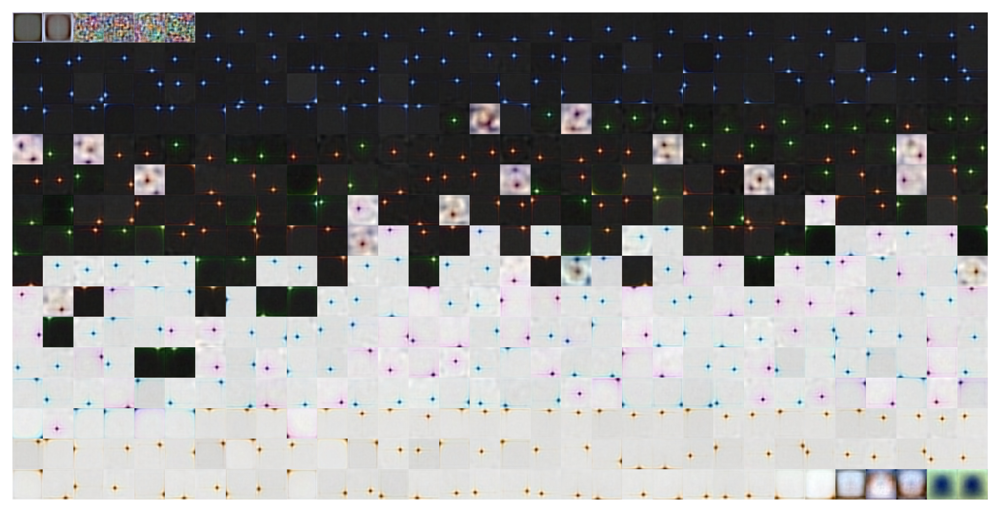
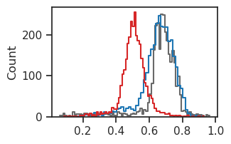
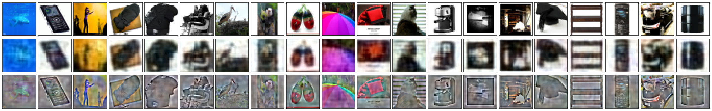
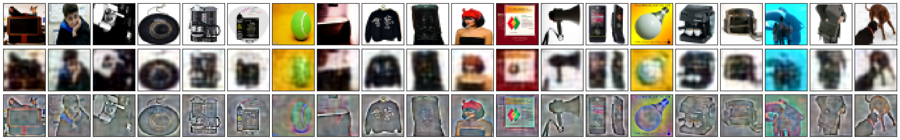
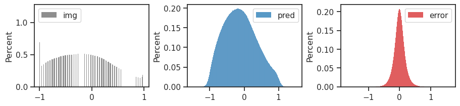
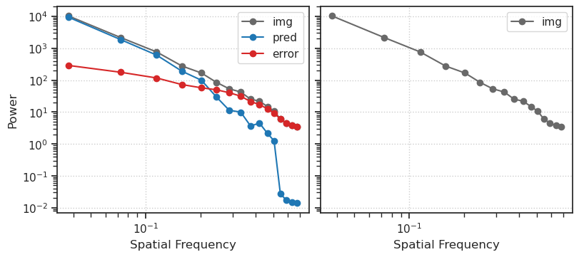
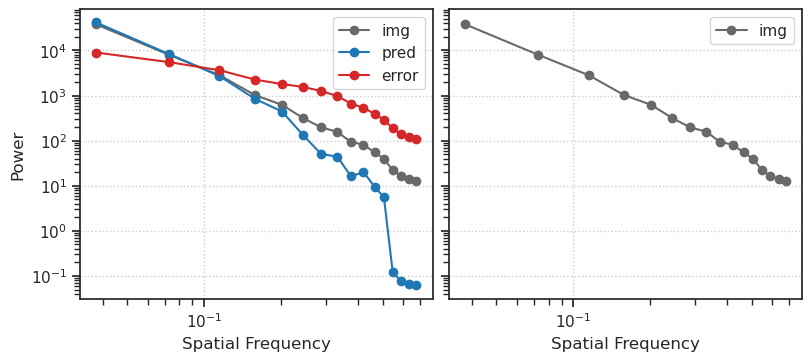

(03) ImageNet32: residual error look whitened?#
project = Retina, host = mach, device = cuda:0
Motivation:
using this model: gaussian-sigmoid: z-256, (8, 16.0)
Show code cell source
# HIDE CODE
import os, sys
from IPython.display import display
# tmp & extras dir
git_dir = os.path.join(os.environ['HOME'], 'Dropbox/git')
extras_dir = os.path.join(git_dir, 'jb-progress-2025/_extras')
fig_base_dir = os.path.join(git_dir, 'jb-progress-2025/figs')
tmp_dir = os.path.join(git_dir, 'jb-progress-2025/tmp')
# GitHub
sys.path.insert(0, os.path.join(git_dir, '_IterativeVAE'))
from figures.convergence import plot_convergence
from figures.imgs import plot_weights
from figures.fighelper import *
from main.train import *
# warnings, tqdm, & style
warnings.filterwarnings('ignore', category=DeprecationWarning)
warnings.filterwarnings('ignore', category=FutureWarning)
warnings.filterwarnings('ignore', category=UserWarning)
from rich.jupyter import print
%matplotlib inline
set_style()
# HIDE CODE
from analysis.fourier import power_spectrum_2d
def _plot_selected_samples(select_from=None, ncols=30, seed=0, dim=16):
rng = get_rng(seed)
nrows = 4
fig, axes = create_figure(nrows, ncols, (1 * ncols + 0.1, 1 * nrows), 'all', 'all')
select_from = order[:500] if select_from is None else select_from
selected_ids = rng.choice(select_from, size=ncols, replace=False)
for i in range(ncols):
idx = selected_ids[i]
axes[0, i].imshow(tonp(true[idx]).reshape(dim, dim), cmap='Greys_r')
axes[1, i].imshow(tonp(pred[idx]).reshape(dim, dim), cmap='Greys_r')
axes[2, i].imshow(tonp(error[idx]).reshape(dim, dim), cmap='Greys_r')
axes[3, i].imshow(tonp(whitened[idx]).reshape(dim, dim), cmap='Greys_r')
axes[0, 0].set_ylabel('img', fontsize=15)
axes[1, 0].set_ylabel('pred', fontsize=15)
axes[2, 0].set_ylabel('error', fontsize=15)
axes[3, 0].set_ylabel('whitened', fontsize=15)
remove_ticks(axes, False)
plt.show()
def _plot_sample_hists(num_samples=-1):
fig, axes = create_figure(1, 3)
sns.histplot(tonp(true[:num_samples]).ravel(), label='img', color='dimgrey', stat='percent', ax=axes[0])
sns.histplot(tonp(pred[:num_samples]).ravel(), label='pred', color='C0', stat='percent', ax=axes[1])
sns.histplot(tonp(error[:num_samples]).ravel(), label='error', color='C3', stat='percent', ax=axes[2])
add_legend(axes)
plt.show()
def _plot_power_spectrum(normalize=False, add_whitened=True):
shape = (-1, *tr.model.cfg.input_sz)
fig, axes = create_figure(1, 2, (8, 3.5), 'all', 'all')
# true
data = tr.to(true.reshape(shape))
if normalize:
data = (data - data.mean()) / data.std()
radial_freq, radial_power = power_spectrum_2d(data)
axes[0].loglog(radial_freq, radial_power, label='img', color='dimgrey', marker='o')
axes[1].loglog(radial_freq, radial_power, label='img', color='dimgrey', marker='o')
# whitened
if add_whitened:
data = tr.to(whitened.reshape(shape))
if normalize:
data = (data - data.mean()) / data.std()
radial_freq, radial_power = power_spectrum_2d(data)
axes[1].loglog(radial_freq, radial_power, label='whitened', color='C1', marker='o')
# pred
data = tr.to(pred.reshape(shape))
if normalize:
data = (data - data.mean()) / data.std()
radial_freq, radial_power = power_spectrum_2d(data)
axes[0].loglog(radial_freq, radial_power, label='pred', color='C0', marker='o')
# error
data = tr.to(error.reshape(shape))
if normalize:
data = (data - data.mean()) / data.std()
radial_freq, radial_power = power_spectrum_2d(data)
axes[0].loglog(radial_freq, radial_power, label='error', color='C3', marker='o')
axes[0].set(xlabel='Spatial Frequency', ylabel='Power')
axes[1].set(xlabel='Spatial Frequency')
add_legend(axes)
add_grid(axes)
plt.show()
device_idx = 3 # 0
device = f'cuda:{device_idx}'
print(f"device: {device} ——— host: {os.uname().nodename}")
device: cuda:3 ——— host: mach
Fits#
root = add_home('Dropbox/chkpts/_IterativeVAE')
fits = sorted(os.listdir(root), key=alphanum_sort_key)
fits = [f for f in fits if 'ImageNet32' in f]
print(fits)
[ 'gaussian+gompertz_<grad|lin>_ImageNet32_t-8_b-16_k-512_mach-0_(2025_04_03,17:39)', 'gaussian+gompertz_<grad|lin>_ImageNet32_t-8_b-16_k-768_yoru-0_(2025_04_03,17:04)', 'gaussian+gompertz_<grad|lin>_ImageNet32_t-8_b-16_k-1024_yoru-0_(2025_04_03,17:02)', 'gaussian+gompertz_<grad|lin>_ImageNet32_t-8_b-16_k-2048_mach-0_(2025_04_03,12:01)', 'gaussian+gompertz_<grad|lin>_ImageNet32_t-8_b-32_k-768_yoru-0_(2025_04_04,00:08)', 'gaussian+gompertz_<grad|lin>_ImageNet32_t-8_b-64_k-768_yoru-0_(2025_04_04,00:08)', 'gaussian+gompertz_<grad|lin>_ImageNet32_t-16_b-16_k-2048_mach-0_(2025_04_03,12:01)', 'gaussian+sigmoid_<grad|lin>_ImageNet32_t-8_b-16_k-768_yoru-0_(2025_04_03,17:05)', 'gaussian+sigmoid_<grad|lin>_ImageNet32_t-8_b-16_k-1024_yoru-0_(2025_04_03,14:20)', 'gaussian+sigmoid_<grad|lin>_ImageNet32_t-8_b-16_k-2048_yoru-0_(2025_04_03,10:52)', 'gaussian+sigmoid_<grad|lin>_ImageNet32_t-8_b-16_k-2048_yoru-0_(2025_04_03,11:02)', 'gaussian+sigmoid_<grad|lin>_ImageNet32_t-8_b-64_k-768_yoru-0_(2025_04_04,00:08)', 'gaussian+sigmoid_<grad|lin>_ImageNet32_t-16_b-16_k-2048_mach-0_(2025_04_03,12:02)', 'gaussian+sigmoid_<grad|lin>_ImageNet32_t-32_b-64_k-1024_yoru-0_(2025_04_03,19:24)' ]
Load trainer#
tr, meta = load_model_lite(pjoin(root, fits[0]), device)
msg = "\n".join([
f"# train iters: {tr.n_iters:,}",
f"\n{tr.model.cfg.name()}",
f"{tr.cfg.name()}_({tr.model.timestamp})\n",
f"checkpoint: {meta['checkpoint']}",
])
print(msg)
# train iters: 307,560 gaussian_gompertz_ImageNet32_t-8_z-[512]_u-(7,2),du-(7,3)_<grad|lin> b500-ep120-lr(0.002)_beta(16:0.1)_gr(100)_(2025_04_03,17:39) checkpoint: 120
u0 = tonp(tr.model.layer.u_init[0].squeeze())
u1 = tonp(tr.model.layer.u_init[1].squeeze())
_ = tr.model.show(order=np.argsort(u0), nrows=16, dpi=500)

tr.cfg.batch_size = 1000
tr.setup_data()
%%time
seq_total = 500
true, pred = [], []
for x, *_ in tqdm(iter(tr.dl_vld)):
# xtract
output = tr.model.xtract_ftr(
feeder=tr.get_feeder(tr.to(x)),
seq=range(seq_total),
return_extras=['conditional'],
).stack()
true.append(tonp(x.flatten(start_dim=1)))
conditional = output['conditional'][str(seq_total - 1)]
pred.append(tonp(conditional.loc))
del output
torch.cuda.empty_cache()
import gc
gc.collect()
true, pred = cat_map([true, pred])
error = true - pred
error.shape
100%|███████████████████████████████████████████| 50/50 [01:07<00:00, 1.35s/it]
CPU times: user 43.8 s, sys: 0 ns, total: 43.8 s
Wall time: 1min 12s
(50000, 3072)
# order: high contrast
var = np.var(true, axis=1)
order = np.argsort(var)[::-1]
# get whitened data
# _, whitened, _ = make_dataset('Kyoto16', device)
# whitened = whitened.tensors[0].flatten(start_dim=1)
# whitened.shape
a = true.reshape((-1, *tr.model.cfg.input_sz))
a = np.transpose(a, axes=(0, 2, 3, 1))
b = pred.reshape((-1, *tr.model.cfg.input_sz))
b = np.transpose(b, axes=(0, 2, 3, 1))
c = a - b
a.shape, b.shape
((50000, 32, 32, 3), (50000, 32, 32, 3))
histplot(a[3].ravel(), color='dimgrey');
histplot(b[3].ravel(), color='C0');
histplot(c[3].ravel(), color='C3');
a_plot = np.clip((1 + a) / 2, a_min=0, a_max=1.0)
b_plot = np.clip((1 + b) / 2, a_min=0, a_max=1.0)
c_plot = np.clip((1 + c) / 2, a_min=0, a_max=1.0)
histplot(a_plot[3].ravel(), color='dimgrey');
histplot(b_plot[3].ravel(), color='C0');
histplot(c_plot[3].ravel(), color='C3');

rng = get_rng(0)
ncols = 20
selected_ids = rng.choice(order[:500], ncols, replace=False)
fig, axes = create_figure(3, ncols, (1.3 * ncols, 4), 'all', 'all')
for i in range(ncols):
img_i = selected_ids[i]
axes[0, i].imshow(a_plot[img_i])
axes[1, i].imshow(b_plot[img_i])
axes[2, i].imshow(c_plot[img_i])
remove_ticks(axes, False)

selected_ids = rng.choice(order[:500], ncols, replace=False)
fig, axes = create_figure(3, ncols, (1.3 * ncols, 4), 'all', 'all')
for i in range(ncols):
img_i = selected_ids[i]
axes[0, i].imshow(a_plot[img_i])
axes[1, i].imshow(b_plot[img_i])
axes[2, i].imshow(c_plot[img_i])
remove_ticks(axes, False)

_plot_sample_hists()

_plot_power_spectrum(normalize=False, add_whitened=False)
_plot_power_spectrum(normalize=True, add_whitened=False)


_plot_power_spectrum()

Movie: first few t#
t in range(50)
# get whitened data
_, whitened, _ = make_dataset('Kyoto16', device)
whitened = whitened.tensors[0].flatten(start_dim=1)
whitened = whitened[torch.from_numpy(order.copy())]
whitened = whitened[:500]
error.shape, whitened.shape
(torch.Size([500, 256]), torch.Size([500, 256]))
# get stimulus
x = tr.dl_vld.dataset.tensors[0]
x = x[torch.from_numpy(order.copy())]
x = x[:500]
true = x.flatten(start_dim=1)
x.shape, true.shape
(torch.Size([500, 1, 16, 16]), torch.Size([500, 256]))
# xtract
output = tr.model.xtract_ftr(
feeder=tr.get_feeder(x),
seq=range(1000),
return_extras=['conditional'],
).stack()
for t in range(30):
print(f"t = {t}")
conditional = output['conditional'][str(t)]
pred = conditional.loc
error = true - pred
_plot_selected_samples(select_from=range(500))
t = 0

t = 1

t = 2

t = 3

t = 4

t = 5

t = 6

t = 7

t = 8

t = 9

t = 10

t = 11

t = 12

t = 13

t = 14

t = 15

t = 16

t = 17

t = 18

t = 19

t = 20

t = 21

t = 22

t = 23

t = 24

t = 25

t = 26

t = 27

t = 28

t = 29

corrs = []
for t in range(1000):
conditional = output['conditional'][str(t)]
pred = conditional.loc
corr = sp_stats.pearsonr(
tonp(pred.ravel()),
tonp(whitened.ravel()),
)
corrs.append(corr.statistic)
fig, ax = create_figure()
ax.plot(range(1, len(corrs) + 1), corrs)
ax.set(xscale='log')
plt.show()

tmp = tonp(tmp.ravel())
sns.histplot(tmp, color='C3');

mean = np.mean(tmp)
std = np.std(tmp)
# Fit Gaussian
x = np.linspace(min(tmp), max(tmp), 1000)
pdf = sp_stats.norm.pdf(x, mean, std)
# Test normality (null hypothesis: data comes from normal distribution)
stat, p = sp_stats.shapiro(tmp)
is_normal = p > 0.05
# Visualization
plt.hist(tmp, density=True, alpha=0.6, bins=70)
plt.plot(x, pdf, 'r-')
plt.text(0.05, 0.95, f'p-value: {p:.4f}\nNormal: {is_normal}', transform=plt.gca().transAxes)
plt.show()
print(f"Shapiro-Wilk test: statistic={stat:.4f}, p-value={p:.4f}")
print(f"Data is {'likely normal' if is_normal else 'not normal'}")

Shapiro-Wilk test: statistic=0.9938, p-value=0.0000
Data is not normal